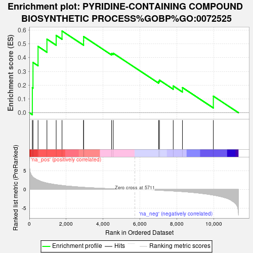

| | | Dataset | deg_ms |
| Phenotype | NoPhenotypeAvailable |
| Upregulated in class | na_pos |
| GeneSet | PYRIDINE-CONTAINING COMPOUND BIOSYNTHETIC PROCESS%GOBP%GO:0072525 |
| Enrichment Score (ES) | 0.5932081 |
| Normalized Enrichment Score (NES) | 1.5193527 |
| Nominal p-value | 0.05720339 |
| FDR q-value | 1.0 |
| FWER p-Value | 1.0 |
Table: GSEA Results Summary

Fig 1: Enrichment plot: PYRIDINE-CONTAINING COMPOUND BIOSYNTHETIC PROCESS%GOBP%GO:0072525
Profile of the Running ES Score & Positions of GeneSet Members on the Rank Ordered List
Fig 2: PYRIDINE-CONTAINING COMPOUND BIOSYNTHETIC PROCESS%GOBP%GO:0072525: Random ES distribution
Gene set null distribution of ES for PYRIDINE-CONTAINING COMPOUND BIOSYNTHETIC PROCESS%GOBP%GO:0072525